GridView의 Cell에서 Enter 키 입력 시 동작하는 방식을 설정하는 예제입니다.
[기본 설정] Enter 키 입력 시 아래로 포커스 이동
Enter 키 입력 시 오른쪽으로 포커스 이동
Enter 키 입력 시 수정 모드로 변경
Enter 키 입력 시
Cell이 출력모드인 경우는 수정 모드로 변경
Cell이 수정모드인 경우는 오른쪽으로 포커스 이동
Enter 키 입력 시
Cell이 출력모드인 경우는 수정 모드로 변경
Cell이 수정모드인 경우는 아래로 포커스 이동
Enter 키 입력 시 기능 없음
"[기본 설정] Enter 키 입력 시 아래로 포커스 이동" 영역의 GridView의 1번째 Cell을 클릭합니다.
[브라우저(Chrome) 실행 예시 - Cell 선택 예시]
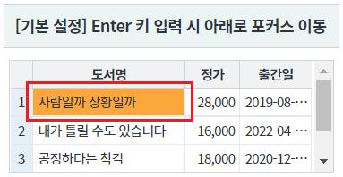
-
GridView의 포커스가 아래(2번째 행)로 이동되는 것을 확인할 수 있습니다.
[브라우저(Chrome) 실행 예시 - 실행 결과]
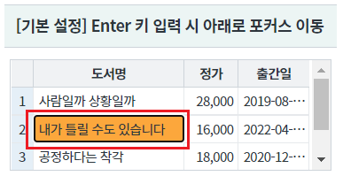
"Enter 키 입력 시 오른쪽으로 포커스 이동" 영역의 GridView의 1번째 Cell을 클릭합니다.
[브라우저(Chrome) 실행 예시 - Cell 선택 예시]
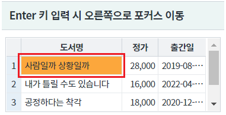
-
GridView의 포커스가 오른쪽(2번째 열)으로 이동되는 것을 확인할 수 있습니다.
[브라우저(Chrome) 실행 예시 - 실행 결과]
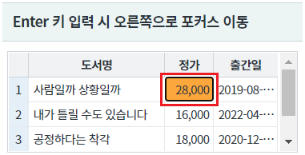
"Enter 키 입력 시 수정 모드로 변경" 영역의 GridView의 1번째 Cell을 클릭합니다.
[브라우저(Chrome) 실행 예시 - Cell 선택 예시]
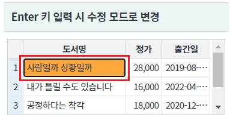
-
GridView의 Cell이 수정 모드로 변경되는 것을 확인할 수 있습니다.
[브라우저(Chrome) 실행 예시 - 실행 결과]
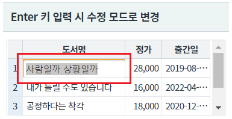
"Enter 키 입력 시 Cell이 출력모드인 경우는 수정 모드로 변경되고 Cell이 수정모드인 경우는 오른쪽으로 포커스 이동" 영역의 GridView의 1번째 Cell을 클릭합니다.
[브라우저(Chrome) 실행 예시 - Cell 선택 예시]
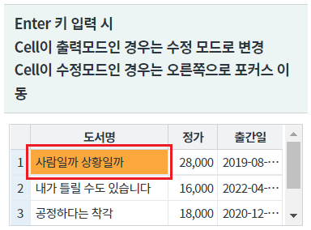
-
GridView의 Cell이 수정 모드로 변경되는 것을 확인할 수 있습니다.
[브라우저(Chrome) 실행 예시 - 실행 결과]
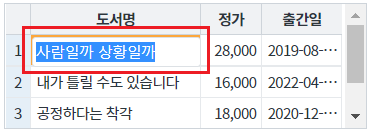
-
GridView의 Cell의 포커스가 오른쪽(2번째 열)으로 이동되는 것을 확인할 수 있습니다.
[브라우저(Chrome) 실행 예시 - 실행 결과]
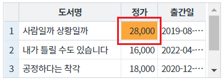
"Enter 키 입력 시Cell이 출력모드인 경우는 수정 모드로 변경 Cell이 수정모드인 경우는 아래로 포커스 이동" 영역의 GridView의 1번째 Cell을 클릭합니다.
[브라우저(Chrome) 실행 예시 - Cell 선택 예시]
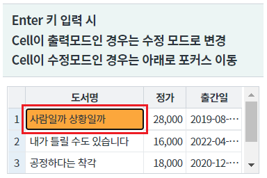
-
GridView의 Cell이 수정 모드로 변경되는 것을 확인할 수 있습니다.
[브라우저(Chrome) 실행 예시 - 실행 결과]
-
GridView의 Cell의 포커스가 아래(2번째 행)로 이동되는 것을 확인할 수 있습니다.
[브라우저(Chrome) 실행 예시 - 실행 결과]
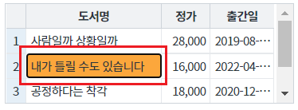
"Enter 키 입력 시 기능 없음" 영역의 GridView의 1번째 Cell을 클릭합니다.
[브라우저(Chrome) 실행 예시 - Cell 선택 예시]
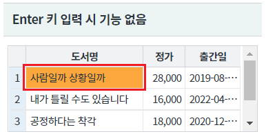
-
GridView의 Cell에 별도의 기능이 동작되지 않는 것을 확인할 수 있습니다.
[브라우저(Chrome) 실행 예시 - 실행 결과]
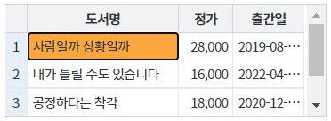
DataList 생성 및 연결은 생략되었습니다.
GridView의 속성을 정의합니다.
[필수] enterKeyMove="" //[default: down, right, none, edit, editRight, editDown]
down : (기본 값) Enter 키 입력 시 아래쪽 셀로 이동.
right : Enter 키 입력 시 오른쪽 셀로 이동.
none : Enter 키를 입력해도 포커스 이동이 없음.
edit : Enter 키 입력 시 편집 모드로 이동.
editRight : 처음 Enter 키 입력 시 편집 모드로 진입한 후, 다시 Enter 키를 입력하면 오른쪽 셀로 이동. 편집 모드에서 Enter 키를 입력할 경우 오른쪽 셀로 이동.
editDown : 처음 Enter 키 입력 시 편집 모드로 진입한 후, 다시 Enter 키를 입력하면 아래쪽 셀로 이동. 편집 모드에서 Enter 키를 입력할 경우 아래쪽 셀로 이동.
그림 1.[웹스퀘어5 SP5 스튜디오의 Property View(속성창) 예시]
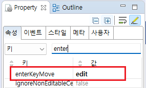
<!-- gridView 의 소스 본문 예시 --> <w2:gridView enterKeyMove="edit" dataList="data:dlt_books"> <!-- 중략 --> </w2:gridView>
enterKeyMove
[웹스퀘어5 SP5 개발 가이드] GridView
링크 : https://docs1.inswave.com/sp5_user_guide/86bdcf48029b958b
[웹스퀘어5 SP5 개발 가이드] GridView Enter 키 입력 시 포커스 이동 방향 설정
링크 : https://docs1.inswave.com/sp5_user_guide/86bdcf48029b958b#9c105ef276a5ef83
GridView Enter 키 입력 시 포커스 이동 방향 설정
링크 : https://youtu.be/mM_2hO0FG1s
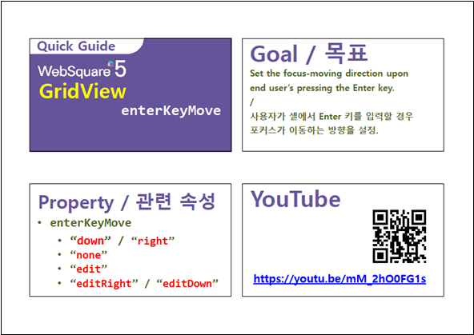